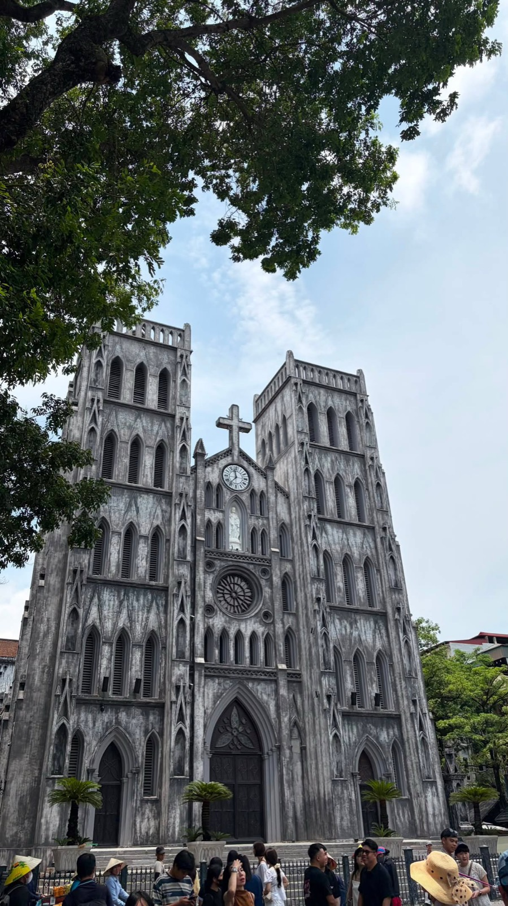
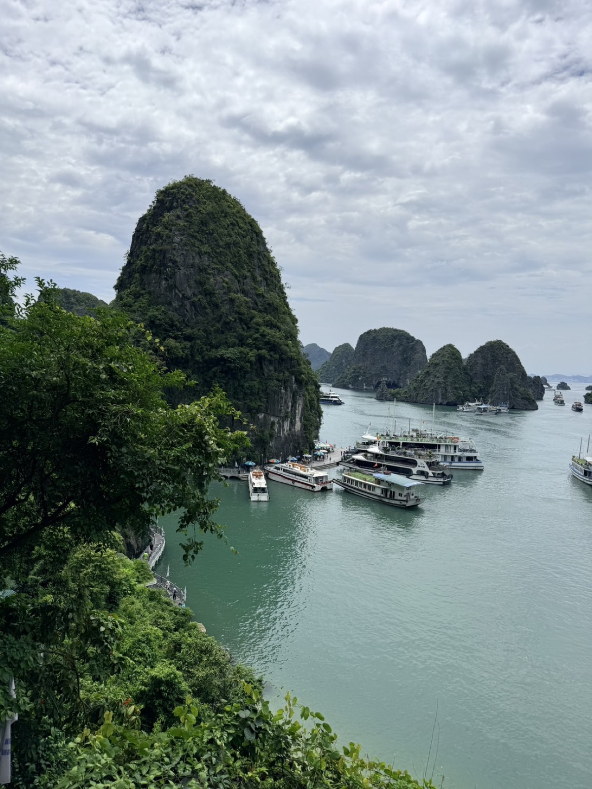
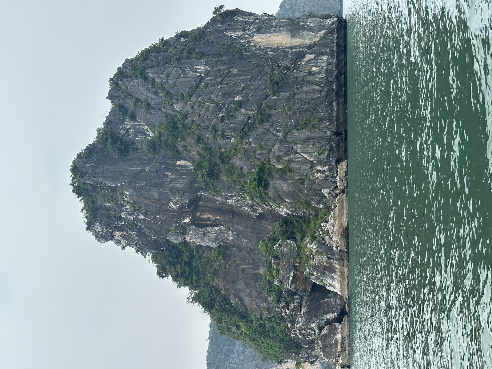
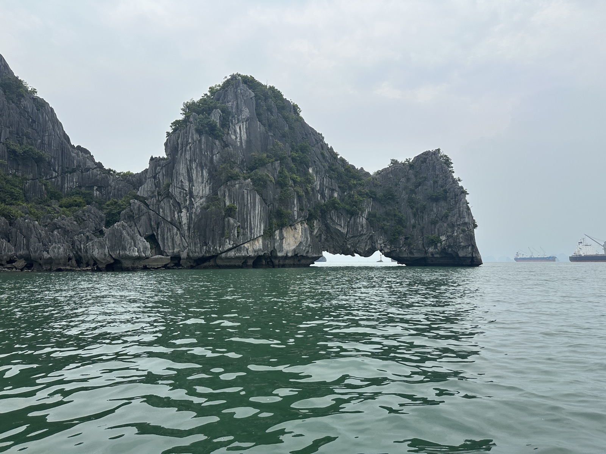
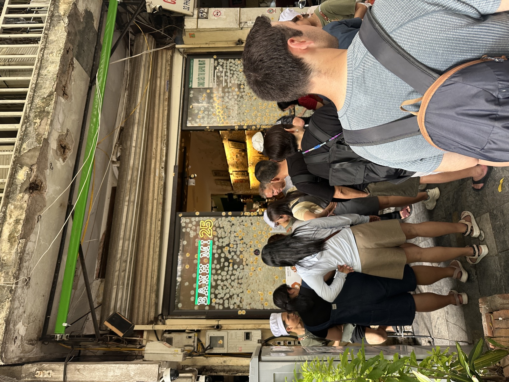
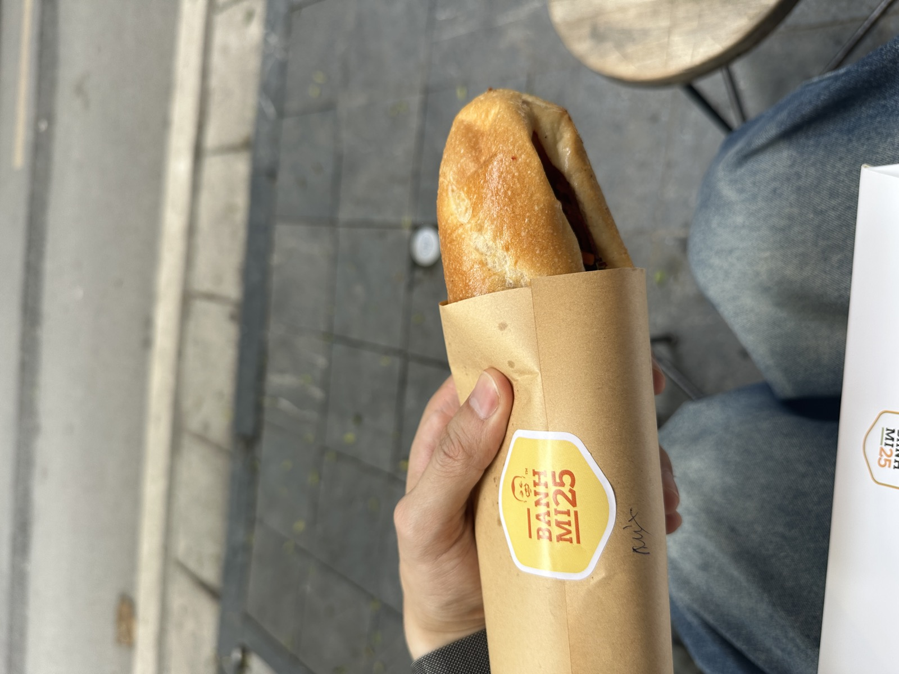
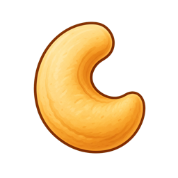
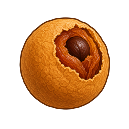

老城巷弄裡，邊走邊遇見河內
古城區最適合用走的。街邊小吃、店鋪、寺廟和老房子的細節都在同一段路上，不用特別追著哪個點跑，慢慢感受巷弄裡的熱鬧就很有河內味。
YoYo 小提醒：想逛店或拍照時，先記得回頭看一眼，老城區很多畫面都藏在身後。

從古街、湖邊咖啡到石灰岩海景，慢慢認識北越。
河內有老故事、湖景和街頭日常；往下龍灣走，又會看見另一種開闊的海上風景。
河內不需要急著打卡完，下龍灣也不用急著把每一座島看清楚。老城區可以慢慢逛，湖邊適合停一下；到了海上，就把眼前的石灰岩和水面留給自己慢慢看。
從轉個彎後的河內街景，到海面上的石灰岩群，北越有兩種很不一樣的好看。
古城區最適合用走的。街邊小吃、店鋪、寺廟和老房子的細節都在同一段路上，不用特別追著哪個點跑，慢慢感受巷弄裡的熱鬧就很有河內味。
YoYo 小提醒：想逛店或拍照時，先記得回頭看一眼，老城區很多畫面都藏在身後。

下龍灣的石灰岩島嶼一座接著一座，船慢慢往前走時，視線會跟著水面和山形一直變化。登上英雄島附近的觀景處，能把船影、海灣和島嶼一起收進眼前。
YoYo 小提醒：海上風景不用急著拍完，留一點時間直接用眼睛看，反而更容易記得當下的感覺。

還劍湖把河內熱鬧的街景拉開了一點距離。周邊有商店、咖啡和在地小選物，沿著湖邊走走看看，很適合把匆忙的步調稍微放慢。
YoYo 小提醒：不必特別安排很久，剛好有一段空檔在湖邊走一圈，就很舒服。
旅行不只有走景點。想上船看看海景，或留一段時間放鬆一下，都是認識北越的方式。
坐上快艇靠近石灰岩島嶼，海風吹過來、山形也跟著靠近，是和搭大船不太一樣的看灣方式。實際是否安排與當天的活動內容，以行程現場說明為準。
海上近距離看風景

如果剛好有一段自由時間，洗頭是很輕鬆的在地體驗。行程走了幾天後，坐下來休息一下、把頭髮整理好，也會讓人重新有精神。
旅行中換個節奏想安排按摩時，可以依自己的身體狀況和當天精神決定。開始前先和服務人員說好力道、溫度與自己不舒服的地方，放鬆起來會更安心。
走累後的休息選項河內的味道很日常，走累了、坐下來、慢慢吃，就會很有感。
想吃一碗河內河粉時，可以把它放進選項裡。熱湯、米線和牛肉的組合很簡單，也很能感覺到北越日常的味道。
河內河粉河內喝咖啡不只是解渴，更像讓自己坐下來看一會兒城市。想試椰子風味咖啡的人，可以照當下想喝的口味慢慢選。
咖啡休息古街散步時想來一份方便拿著走的越式三明治，這裡是可以記下來的選項。口味依自己的喜好挑就好。
散步小吃

挑幾樣回家後還會想起河內的東西，就夠了。
把咖啡香帶回家，旅行結束後還能慢慢回味。

原味或調味各有喜好，適合挑小包裝和朋友分享。
輕巧好分送，選自己會想吃、也想分享的口味就好。

帶著自然甜味，想挑一點北越常見的果乾伴手禮時可以看看。
小小一盒有北越的點心感，留給自己或送人都很剛好。